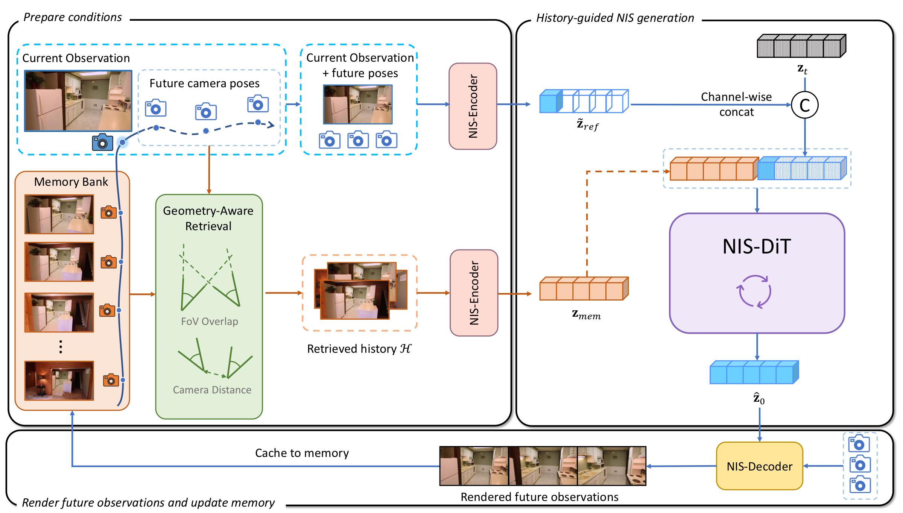
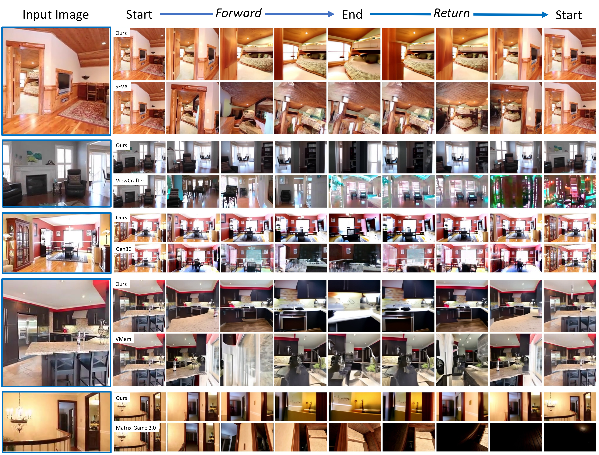
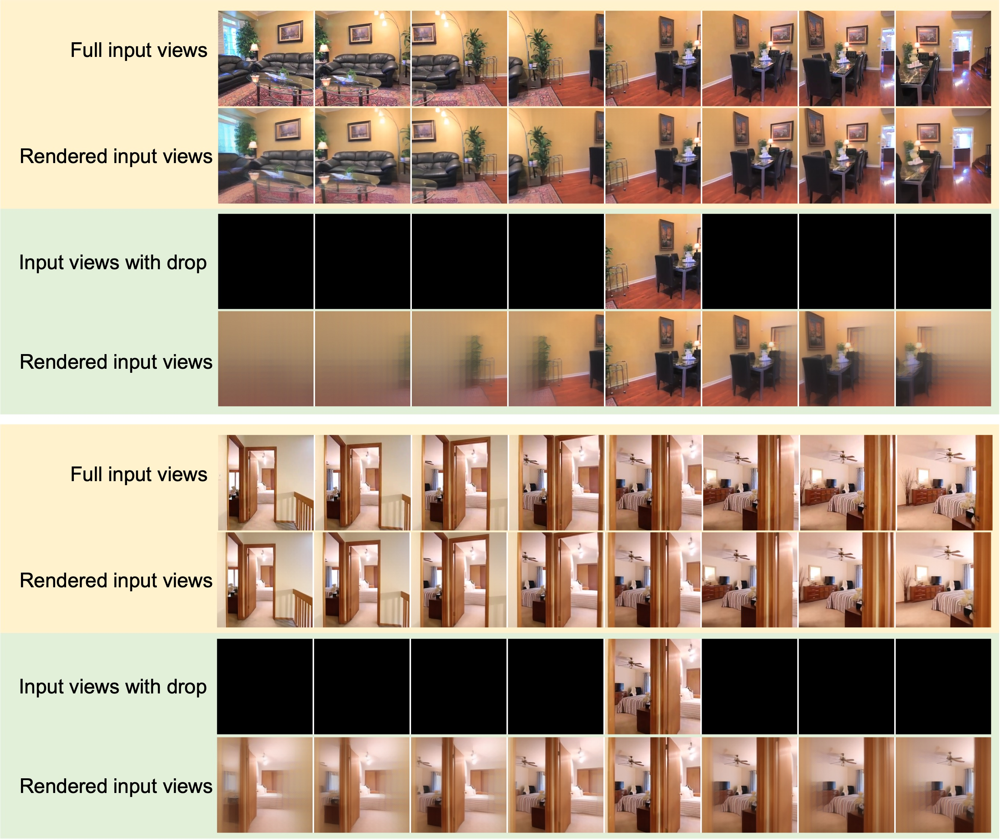
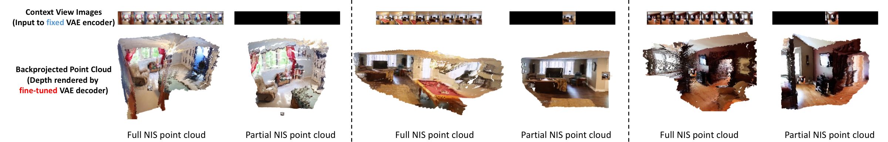
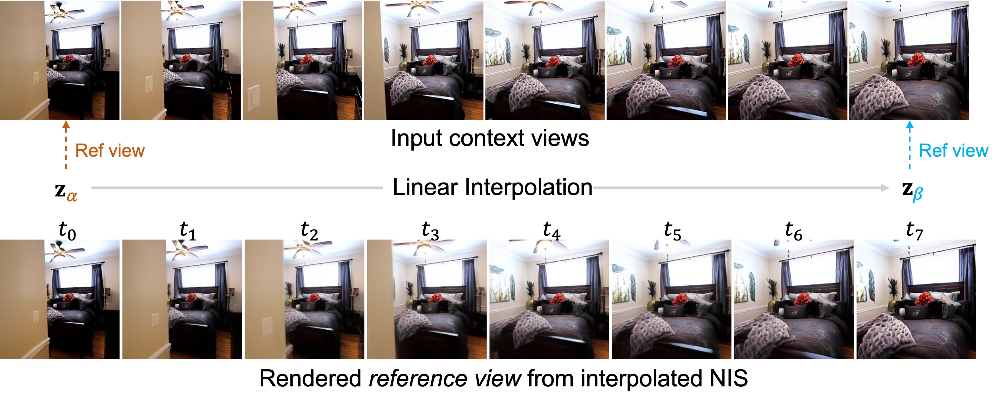
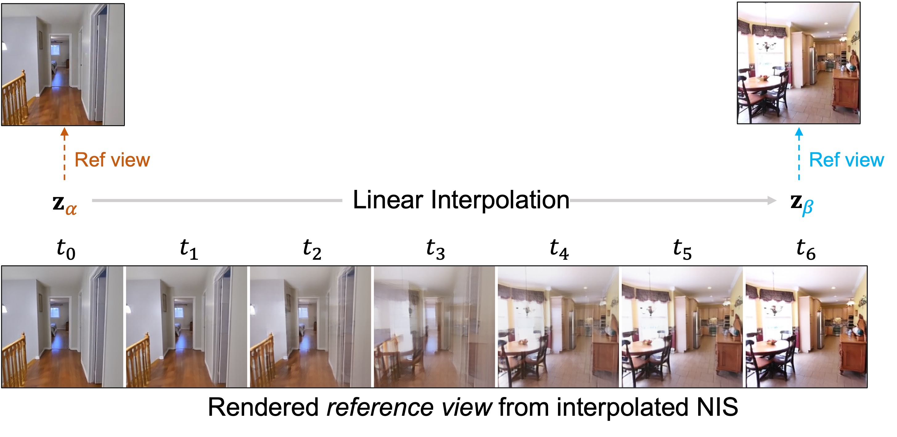
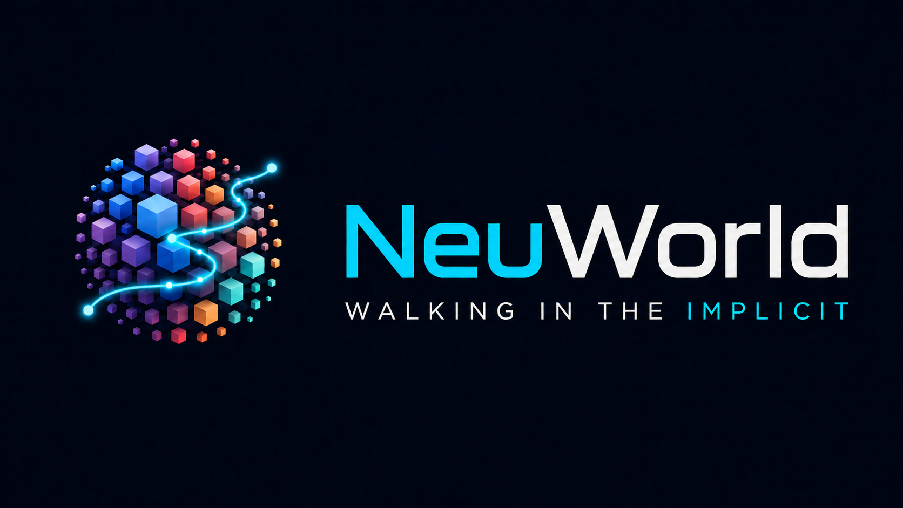

Encode partial NIS
Current observation and sparse future poses are mapped into the same NIS modality as the rollout state.
Interactive World Exploration via Neural Scene Representation
NeuWorld rolls out a fixed-length, renderable Neural Implicit Scene state and renders queried observations under camera control.
Key idea. Replace autoregressive frame-latent rollout with a fixed-length renderable scene state.
Interactive video generation systems for camera-controlled world exploration roll out growing sequences of latent video frames, entangling state transition with high-frequency observation synthesis. We propose Walking in the Implicit, a scene-centric paradigm that changes the rollout variable from frame latents to a fixed-length, renderable implicit state, termed Neural Implicit Scene (NIS).
This factorizes interactive generation into stochastic transition of a compact scene state and deterministic pose-conditioned rendering given the sampled state. We instantiate this paradigm as NeuWorld: a transformer VAE learns locally anchored NIS from sparse posed frames, and a diffusion transformer evolves NIS conditioned on future camera trajectories and geometry-aware retrieved history.
By reusing the VAE encoder as a unified conditioner, NeuWorld maps camera, reference-image, and history cues into the same NIS modality, avoiding external heterogeneous encoders. Trained from scratch on public posed-view data without pretrained video backbones or auxiliary 3D reconstructors, NeuWorld achieves strong long-horizon consistency with favorable inference efficiency.

Current observation and sparse future poses are mapped into the same NIS modality as the rollout state.
Geometry-aware retrieval selects history frames relevant to the upcoming camera trajectory.
A diffusion transformer evolves fixed-length NIS tokens under camera and history conditions.
The frozen NIS decoder deterministically renders queried views from the sampled local state.






@inproceedings{li2026neuworld,
title = {Walking in the Implicit: Interactive World Exploration via Neural Scene Representation},
author = {Li, Zhiqi and Dong, Chengrui and Du, Zhenhua and Zhou, Hangning and Qiu, Cong and Qin, Hailong and Yang, Mu and Wei, Dongxu and Liu, Peidong},
booktitle = {European Conference on Computer Vision (ECCV)},
year = {2026}
}